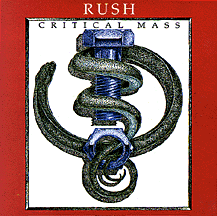

CRITICAL
MASS
Prism Records
PR-0696
(61:06) (64:09)
Recorded:
March 22, 1994
The Palace of Auburn Hills. Auburn Hills, MI
Track Listing (Disk 1):
Intro || Dreamline || The Spirit of Radio || The Analog Kid ||
Cold Fire || Time Stand Still || Nobody's Hero || Roll The Bones ||
Animate || Stick It Out || Double Agent || Limelight
Track Listing (Disk 2):
Mystic Rhythms || Closer To The Heart || Show Don't Tell || Leave That
Thing Alone || drum solo || The Trees || Xanadu || Hemispheres: Prelude ||
Tom Sawyer || Force Ten || YYZ || Pieces of Eight
Sound Quality: ?
Packaging: ?
Reviewing it later tonight... ;-)